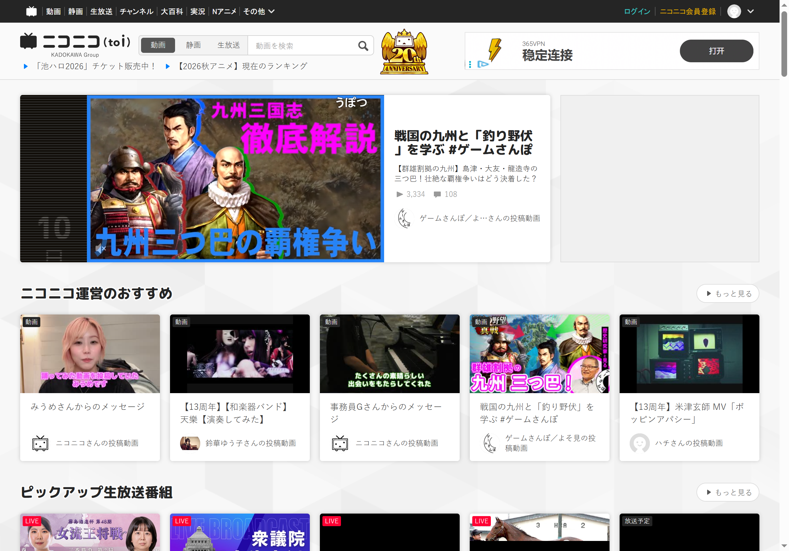
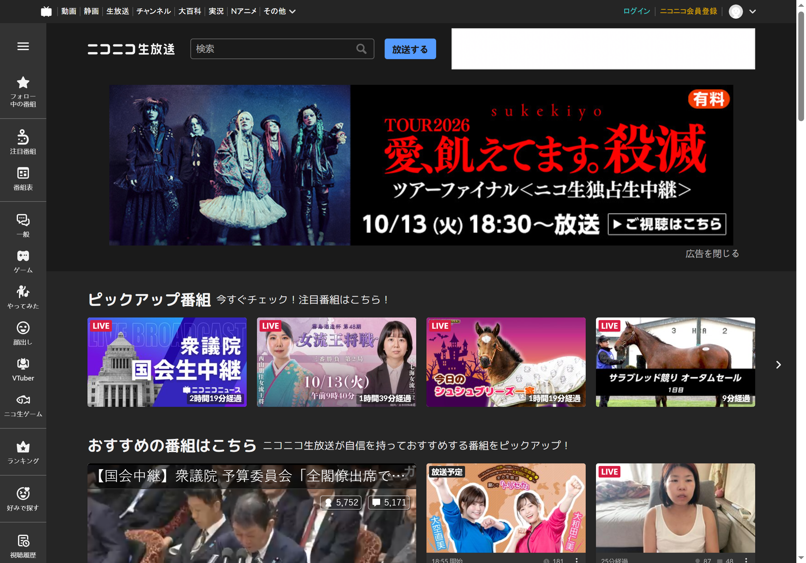

Niconico Premium 到底值不值这 990 日元？一笔算得清的账
把 Niconico 的两个付费档位掰碎了算：免费版忍什么痛、990 日元换什么、MAX 版多花 110 日元值不值，三类用户对号入座。
先抛一个最实在的问题
你刷 Niconico 吗？刷到什么程度？
这个问题的答案直接决定了你要不要为 Niconico Premium 掏钱。我花了快一年的 Premium，中途停过两个月免费版"回归测试"，又回到付费——把这笔账算明白给你，省得你纠结。
Niconico官网 是日本老牌的弹幕视频社区，VOCALOID、MMD、唱见、游戏实况的发源地，如果你对这些内容形态陌生，大概率可以直接关掉，这篇跟你没太大关系。但如果你蹲过 2007 年第一波初音未来视频、看过弹幕墙、追过生放送，那往下看。

定价拆解：两档，差 110 日元
先把价格列清楚，想先体验的话可以下载客户端注册免费账号试试，价格按汇率换算成人民币方便理解（实时汇率波动，就按 1 日元 ≈ 0.047 人民币算）：
| 方案 | 月价 | 年价（无折扣） | 约人民币/月 |
|---|---|---|---|
| Premium 普通版 | 990 円 | 11,880 円 | 46.5 元 |
| Premium MAX 版 | 1,100 円 | — | 51.7 元 |
年付跟月付同价，没有"买一年送两个月"这种常见的套路，这点挺实在，也挺鸡贼——说明他们知道大部分用户是按月订阅然后忘了取消。
两个档位的核心差距就一条：MAX 版多了漫画/轻小说读放題——5 万册以上漫画、轻小说、实用书，外加 90 种漫画杂志。普通版在视频、直播、弹幕方面的权益跟 MAX 完全一致，差的就是这 110 日元（约 5 块钱）换 5 万册书。
免费版到底给了什么痛
算值不值之前，得先搞清楚免费版你在忍什么。这些痛点在高峰期特别明显：
画质降档：免费会员高峰期（日本晚上 8-11 点）看 720p 会被强制降到 480p，画面糊得像老录像。Premium 会员优先保障高画质，1080p 和 1080p60fps 是免费版根本没有的选项。
广告：视频前中后贴片广告，生放送直播也插——单条 15-30 秒，多的话一条视频能插三次。
弹幕匿名：免费会员只能发匿名弹幕（なふだなし），想在弹幕里显示头像和昵称？得先付费。这个在社区里其实挺微妙的——Niconico文档里有更详细的弹幕体系说明，匿名其实是 Niconico 社区的传统，但显示昵称意味着你是"认真发弹幕"的人，创作者会注意到。
NG 容量小：屏蔽关键词上限 200 条、屏蔽用户 200 个、标签屏蔽 100 个。如果你追得多、又不想看某些类型的视频，200 条关键词很快就用完了。
续播历史有限：免费版续播历史条数比 Premium 少得多，部分视频甚至不支持续播——断网了或者切 App，回来得手动找。
直播录像 6 个月后删除：免费会员看的生放录像，6 个月后平台就删了。Premium 永久保存。
算账：三类人对号入座
轻度用户：每周看一两次
场景：偶尔刷 VOCALOID 新歌、看个 MMD 舞蹈视频、追一个游戏实况主。一周打开 Niconico 不超过 3 次，每次半小时以内。
免费版够不够：完全够。高峰期就忍忍画质、跳过几次广告，弹幕匿名也不影响你看弹幕墙。NG 关键词 200 条对你来说绰绰有余。
付费后每单位时间成本：假设每月看 20 小时视频，990 日元 ÷ 20 小时 ≈ 每小时 49.5 日元（约 2.3 元人民币）。看一个 5 分钟视频花 4 日元——不贵，但对你来说没必要。
结论：永远不用付。除非哪天你发现自己手机屏幕里 Niconico 的图标开始变成红圈未读通知。
主力用户：每天泡 1-2 小时
场景：你有固定追的 P 主、唱见、游戏实况主播，每天上下班通勤或睡前必须刷 Niconico。收藏夹塞满了，关注列表 200 人快满了。弹幕不只是看——你自己也发，偶尔在固定顶部发个"此处高能"标注时间点。
免费版的痛点开始扎人：高峰期画质降到 480p 忍不了、广告打断节奏烦、NG 关键词不够用、续播历史有时候突然找不到之前的视频。
付费后每单位时间成本：假设每天 1.5 小时、每月 45 小时，990 日元 ÷ 45 小时 ≈ 每小时 22 日元（约 1 元人民币）。每刷 3 小时视频才花 3 块钱——这个成本结构在国内视频平台对比下来其实不贵，国内某主流视频平台的高级会员是 25 元/月、只支持两台设备、部分独播还要额外付费。
省的时间账：免费版每个视频平均被广告打断 15 秒，每天 1.5 小时 = 约 30 条视频 = 被打断 7.5 分钟。每月就是 225 分钟（3.75 小时）。990 日元买回 3.75 小时不被打断的体验——每小时 264 日元（约 12 元），如果你的时间值这个价，就值得。
结论：闭眼付普通版。如果你看漫画的话直接 MAX 版——多花 5 块钱换 5 万册书，相当于视频白送。
重度用户/创作者：每天 3 小时以上，或者自己产内容
场景：你不仅刷，还发视频、做生放送直播。收藏夹已经 10 个了、每个快满 500 条，关注列表 200 人塞不下。弹幕里你显示昵称，是社区里有人记得的"那个发 XX 弹幕的人"。
免费版根本扛不住：收藏夹 10 个上限卡死了、关注 200 人不够、主页数据分析只有总量没有趋势图、直播录像 6 个月删一次历史内容找不着、弹幕颜色只有 8 种根本不够玩。
Premium 给你的生产力加成：收藏夹从 10 个扩容到 50 个、每个从 500 条到 2000 条、总收藏从 5000 到 20000；关注上限从 200 到 1000；主页数据看得到完整趋势图和粉丝分布；NG 容量翻倍；弹幕颜色多 20+ 种。
生放送的增值权益特别重要：免费版直播录像 6 个月后删除，Premium 永久保存——这对于回放党的创作者来说，简直是刚需。还有高清直播画质（1080p60fps 免费版根本没有），直播时观众看你的画面清晰度直接影响留观率。
结论：必须付，而且直接 MAX 版。你省下的时间和社区运营成本远不止 50 块钱。

替代方案：不付这笔钱的代价
如果你看完还是不想付钱，有几条路可以走，但每条都有代价：
方案一：继续用免费版 + 忍。代价就是上面列的那些痛点，高峰期画质降档、广告打断、弹幕匿名、收藏不够用。对轻度用户来说代价可接受，对主力用户来说会越来越痛苦。
方案二：换平台。Niconico 的核心魅力是弹幕社区和 VOCALOID/MMD 生态——国内的 B 站也有弹幕，但生态完全不一样（VOCALOID 在国内热度早已不如当年，MMD 也主要在小众圈子）。YouTube 有唱见和实况，但弹幕体验是半吊子、没有固定顶部/底部、也没有 Niconico 那套社区文化。换平台 = 换内容，不是免费替代。
方案三：等促销。Niconico Premium 偶尔会搞"首次开通 7 天免费试用"或者"月付减 200 日元"之类的活动，但频率低、折扣也不大，不像国内视频平台那样"9.9 元包月"。你可以蹲一下，但别抱太大期望。
最终结论
| 用户类型 | 推荐方案 | 一句话理由 |
|---|---|---|
| 轻度用户（每周 ≤2 次） | 免费版就行 | 痛点不扎人、付费没有边际收益 |
| 主力用户（每天 1-2 小时） | Premium 普通版 | 每小时 1 元人民币，买回不被打断的体验 |
| 看漫画的主力用户 | Premium MAX 版 | 多花 5 块钱 = 5 万册漫画 + 普通版所有权益 |
| 重度/创作者 | 必须 MAX 版 | 收藏扩容、直播录像、弹幕身份——全是生产力 |
最后一个省钱小贴士：用信用卡或 PayPal 月付，到期前 1-2 天手动取消，只花一个月不续。别用 App Store 或 Google Play 订阅——这俩平台的自动续费设置藏得深，我曾经忘取消被扣了三个月才发现。
这套资料同步维护在三个代码仓库方便随时查阅——GitHub 作为主版本跟进更新，国内访问可以直接走 Gitee 或 GitCode 的镜像，内容完全一致。